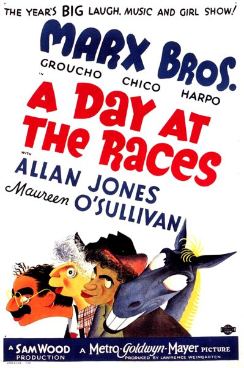

THE STANFORD THEATRE
Now Showing
·
Upcoming
·
Past
·
Search
November 14 - December 29, 2013
Preston Sturges and The Marx Bros
8 bills
November 14 - 17
The Great McGinty (1940)
80 min
The Cocoanuts (1929)
93 min
November 21 - 24
Christmas in July (1940)
67 min
Animal Crackers (1930)
93 min
November 28 - December 1
The Lady Eve (1941)
97 min
Monkey Business (1931)
77 min
December 5 - 8
Sullivan's Travels (1941)
90 min
Horse Feathers (1932)
64 min
December 12 - 15
The Miracle of Morgan's Creek (1944)
99 min
Duck Soup (1933)
68 min
December 19 - 22
The Palm Beach Story (1942)
88 min
A Night at the Opera (1935)
87 min
December 24
It's a Wonderful Life (1946)
125 min
December 26 - 29
Hail the Conquering Hero (1944)
101 min

A Day at the Races (1937)
105 min
Archived
•
StanfordTheatre.org Original